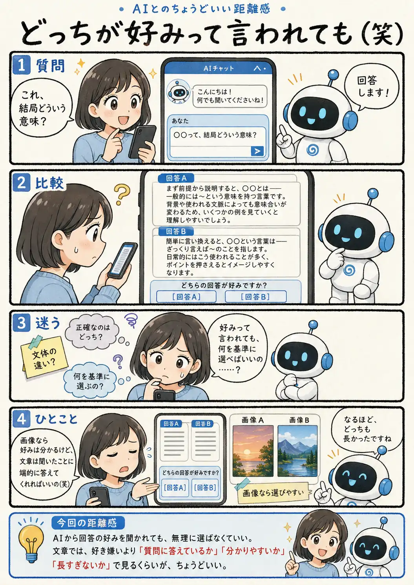

#084
どっちが好みって言われても（笑）
文章の好みより、聞いたことに答えてほしい

メモ
画像なら、色や構図を見て「こちらが好き」と直感的に選びやすいものです。一方、文章の評価には、正確さ、簡潔さ、読みやすさ、目的との一致など、いくつもの基準があります。
そのため、二つの文章を見せられて「どちらが好みですか？」と聞かれても、単なる言い回しの違いなのか、内容の良し悪しを比べるのか分からず、迷うことがあります。
明確な違いが分からない時は無理に選ばず、自分が必要としている答えになっているかという基準で受け取れば十分です。
今回の距離感
AIから回答の好みを聞かれても、無理に選ばなくていい。文章では、好き嫌いより「質問に答えているか」「分かりやすいか」「長すぎないか」で見るくらいが、ちょうどいい。